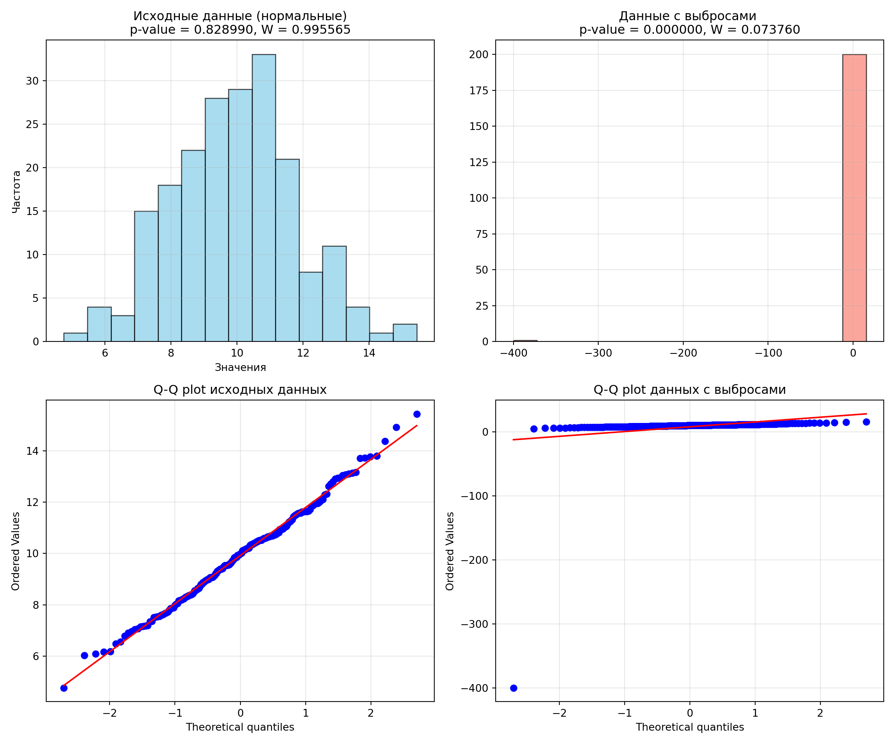

shapiro.test(data)17 Биостатистика
18 Семинар 2: Введение в статистику. Описательные статистики и распределения
18.1 1. Что такое распределение?
Распределение случайной величины — это закон, который описывает, какие значения величина принимает и с какой частотой. Понимание распределения данных — основа для выбора правильных статистических методов.
18.1.1 1.1 Ключевые типы распределений (теоретические модели)
- Нормальное распределение (Гаусса): Возникает, когда значение признака формируется под действием множества малых независимых и аддитивных (складывающихся) факторов. Это “рабочая лошадка” статистики, основа большинства параметрических критериев.
- Логнормальное распределение: Возникает, когда значение является произведением большого числа независимых положительных факторов. Если взять логарифм такой величины, он будет распределен нормально. Пример: концентрация антител в крови.
- Распределение Пуассона: Описывает число редких событий, происходящих за фиксированный промежуток времени или в фиксированном объеме пространства. Пример: число мутаций на участке ДНК, число посетителей в очереди.
18.1.2 1.2 Типы распределений по шкале измерения
-
Дискретное распределение: Значения величины можно пересчитать (обычно целые числа).
- Важное замечание (реалии измерений): На практике любые наши измерения всегда дискретны, так как точность любого прибора конечна. Мы никогда не сможем измерить “бесконечно точный” рост человека. Дискретность — свойство измерения, а не всегда природы явления.
-
Непрерывное распределение: Математическая идеализация. Предполагается, что величина может принимать бесконечное множество значений на интервале.
- Следствие: Вероятность получить конкретное значение (например, рост ровно 175.00000… см) бесконечно мала (стремится к нулю). Мы всегда говорим о вероятности попадания значения в некоторый интервал.
18.2 2. Меры разброса (вариации)
Меры разброса показывают, насколько сильно значения в выборке отличаются друг от друга.
Дисперсия (\(S^2\) или \(D\)): Средний квадрат отклонений значений от среднего. Характеризует разброс в квадратных единицах измерения. Для выборки используется формула с \(n-1\): \[S^2 = \frac{\sum (x_i - \bar{x})^2}{n-1}\]
Стандартное отклонение (\(S\) или \(SD\)): Квадратный корень из дисперсии. Возвращает меру разброса в исходные единицы измерения, что удобно для интерпретации. \[S = \sqrt{S^2}\]
-
Число степеней свободы (df): Это количество независимых элементов, участвующих в расчете статистики.
- В формуле дисперсии выборки мы делим на \(n-1\), а не на \(n\), потому что для вычисления разброса мы уже использовали среднее (\(\bar{x}\)). Зная среднее и \(n-1\) значений, последнее значение можно однозначно восстановить, то есть оно не свободно.
- Это коррекция Бесселя, которая делает выборочную дисперсию несмещенной оценкой дисперсии генеральной совокупности (\(\sigma^2\)). Особенно это важно для малых выборок.
-
Коэффициент вариации (\(CV\)) или относительное стандартное отклонение (\(RSD\)):** Позволяет сравнивать изменчивость величин, измеренных в разных единицах или имеющих сильно различающиеся средние. \[CV = \frac{S}{\bar{x}} \cdot 100\%\]
-
Интерпретация (условная, зависит от области науки):
- \(<10\%\) — слабая вариабельность
- \(10\% - 20\%\) — средняя вариабельность
- \(>20\%\) — сильная вариабельность
- Важно: На графиках обычно указывают стандартное отклонение (\(SD\)) или доверительный интервал (\(CI\)). \(CV\) удобен в текстовых описаниях и отчетах для сравнения разнородных величин.
-
Интерпретация (условная, зависит от области науки):
18.2.1 Как меняются выборочные характеристики при изменении значений
| Изменение | Среднее \(\bar{x}\) | Дисперсия \(S^2\) | Стандартное отклонение \(S\) |
|---|---|---|---|
| Добавление нового значения | Меняется | Меняется | Меняется |
| Добавление значения, равного \(\bar{x}\) | Не меняется | Уменьшается | Уменьшается |
| Добавление выброса | Смещается в сторону выброса | Увеличивается | Увеличивается |
| Увеличение всех значений на константу \(c\) | Увеличивается на \(c\) | Не меняется | Не меняется |
| Умножение всех значений на константу \(c\) | Умножается на \(c\) | Умножается на \(c^2\) | Умножается на \(c\) |
18.3 3. Оценка точности выборочного среднего
Эти характеристики говорят не о разбросе данных, а о том, насколько точно наша выборка оценивает параметры всей генеральной совокупности.
Стандартная ошибка среднего (\(SEM\) или \(S_e\)): Показывает, насколько сильно выборочное среднее (\(\bar{x}\)) может отличаться от истинного среднего генеральной совокупности (\(\mu\)). По сути, это стандартное отклонение выборочных средних. \[S_e = \frac{S}{\sqrt{n}}\]
Важное предупреждение про интерпретацию графиков: На графиках средних иногда ошибочно используют \(SEM\) для отображения “усов”, чтобы они выглядели короче (так как \(\sqrt{n}\) уменьшает значение). Это вводит в заблуждение! \(SEM\) характеризует точность оценки среднего, а не разброс данных. Для визуализации разброса данных нужно использовать \(SD\). Сравнение графиков с разными “усами”:
| Характеристика на графике | Что показывает | Как меняется с ростом \(n\) | Если “усы” пересекаются | Если “усы” не пересекаются |
|---|---|---|---|---|
| \(SD\) (\(\bar{x} \pm S\)) | Разброс индивидуальных значений | Не меняется (мы точнее его вычисляем) | Не говорит о значимости различий средних | Не говорит о значимости различий средних |
| \(SEM\) (\(\bar{x} \pm S/\sqrt{n}\)) | Точность оценки среднего | Уменьшается (интервал сужается) | Скорее всего, нет значимых различий между группами | Неочевидно, нужен доп. анализ |
| Правильный 95% ДИ (\(\bar{x} \pm t \cdot S/\sqrt{n}\)) | Интервал, накрывающий истинное среднее \(\mu\) с 95% вероятностью | Уменьшается (интервал сужается) | Неочевидно, различия могут быть как значимы, так и нет | Высокая вероятность значимых различий средних |
Примечание к таблице: Для корректного сравнения выборки должны быть примерно одинакового размера.
18.4 4. Стандартизация и Z-преобразование
Позволяет привести любое распределение к стандартному виду для сравнения.
-
Z-преобразование (z-оценка, z-score): Переводит распределение в стандартное нормальное со средним = 0 и стандартным отклонением = 1. \[z = \frac{x_i - \bar{x}}{S}\]
- Смысл: Показывает, на сколько стандартных отклонений точка \(x_i\) отстоит от среднего выборки.
-
Правило трёх сигм (для нормального распределения):
- В интервал \([\bar{x} - S; \bar{x} + S]\) попадает ~68.3% данных.
- В интервал \([\bar{x} - 2S; \bar{x} + 2S]\) попадает ~95.4% данных.
- В интервал \([\bar{x} - 3S; \bar{x} + 3S]\) попадает ~99.7% данных.
- Напоминание: общая площадь под кривой плотности вероятности всегда равна 1 (или 100%).
18.5 5. Доверительный интервал (\(CI\)) для среднего
Определение: Интервал, построенный по случайной выборке, который с заданной вероятностью (уровнем доверия, например, 95%) накрывает истинное значение параметра генеральной совокупности (\(\mu\)).
- Центральная предельная теорема (ЦПТ): Именно благодаря ей мы можем строить доверительные интервалы. Даже если исходные данные распределены не нормально, распределение выборочных средних будет стремиться к нормальному при увеличении объема выборки \(n\).
-
Свойства доверительного интервала:
- Чем больше объем выборки (\(n\)), тем уже доверительный интервал (оценка точнее).
- Чем больше изменчивость (\(S\)), тем шире интервал.
- Чем выше требуемая надежность (например, 99% вместо 95%), тем шире интервал.
18.5.1 5.1 Расчет 95% ДИ для разных ситуаций
В общем виде: \(\bar{x} \pm (\text{критическое значение} \cdot S_e)\)
-
Идеальный случай (известно \(\sigma\) генеральной совокупности): Используется нормальное распределение. \[\bar{x} \pm z_{крит} \cdot \frac{\sigma}{\sqrt{n}}\] Для 95% ДИ \(z_{крит} = 1.96\)
Таблицы стандартного нормального распределения обычно показывают площадь слева от заданного \(z\) (cumulative probability) — то есть площадь под кривой от \(-\infty\) до \(z\).
Для 95% доверительного интервала нам нужно найти такое \(z\), чтобы площадь слева от \(z\) = \(0.95 + 0.025 = 0.975\) (97.5%). Такое значение в таблице - 1.96
Реальный случай (большая выборка, \(n \geq 30\)): Мы не знаем \(\sigma\), но используем его оценку \(S\). Благодаря ЦПТ, можно приближенно использовать \(z=1.96\). \[\bar{x} \pm 1.96 \cdot \frac{S}{\sqrt{n}}\]
Реальный случай (маленькая выборка, \(n < 30\)): Если данные взяты из нормального распределения (это нужно проверить!), использовать \(z=1.96\) нельзя, так как оценка \(S\) неточна. Вместо нормального используют \(t\)-распределение (Стьюдента). \[\bar{x} \pm t_{(\alpha, df)} \cdot \frac{S}{\sqrt{n}}\] Где \(t_{(\alpha, df)}\) — табличное значение для уровня значимости \(\alpha = 0.05\) (для 95% ДИ) и числа степеней свободы \(df = n-1\).
Что делать, если данные не нормальны и выборка мала? Классические параметрические методы (t-критерий) неприменимы. Нужно использовать непараметрические методы, например, бутстреп (bootstrap) для построения доверительного интервала или непараметрические критерии для проверки гипотез.
18.6 6. Проверка нормальности распределения
Прежде чем применять параметрические критерии, нужно убедиться, что данные (хотя бы приблизительно) нормальны.
18.6.1 6.1 Графические методы
- Гистограмма плотности: Визуальное сравнение формы распределения с колоколообразной кривой Гаусса.
- Box plot (Ящик с усами): Позволяет увидеть симметричность распределения и наличие выбросов. Для нормального распределения медиана находится примерно по центру ящика, а усы примерно одинаковой длины.
- Стебель-листья (Stem-and-leaf plot): Таблица, похожая на гистограмму, но сохраняющая исходные значения. Полезна для малых выборок.
-
Q-Q plot (Квантиль-квантильный график): Самый наглядный метод.
- Идея: На график наносятся квантили ваших данных против теоретических квантилей нормального распределения.
- Интерпретация: Если точки ложатся на прямую линию, распределение близко к нормальному.
-
Асимметрия (Skewness) и Эксцесс (Kurtosis):
- Для нормального распределения асимметрия = 0, эксцесс = 0 (или 3, в зависимости от определения в разных пакетах).
- Left-Skewed (отрицательная асимметрия): Левая часть распределения “тяжелее”, длинный хвост слева.
- Right-Skewed (положительная асимметрия): Длинный хвост справа. Часто встречается у логнормальных данных.
18.6.2 6.2 Численные тесты
-
Тест Шапиро-Уилка (Shapiro-Wilk test): Рекомендуется для малых и средних выборок (обычно \(n < 50\)). Обладает высокой мощностью.
- H0 (нулевая гипотеза): Данные взяты из нормального распределения.
-
Интерпретация p-value:
- Если p-value < 0.05, мы отвергаем H0. Распределение значимо отличается от нормального.
- Если p-value > 0.05, у нас нет оснований отвергнуть H0. Данные могут быть нормальными (но это не строгое доказательство нормальности).
- Статистика W показывает, насколько хорошо данные соответствуют нормальности (чем ближе к 1, тем лучше).
-
Тест Колмогорова-Смирнова (Kolmogorov-Smirnov test):
- Внимание: В классическом виде этот тест не подходит для проверки нормальности, когда параметры распределения (среднее и дисперсия) неизвестны и оцениваются по той же выборке. Это сильно завышает p-value.
- Для проверки нормальности используют его модификации: тест Лиллиефорса (Lilliefors test) или критерий Андерсона-Дарлинга (Anderson-Darling test). Они рекомендованы для больших выборок (\(n > 50\)).
18.7 7. Важное дополнение: Логнормальные данные
Если данные имеют правостороннюю асимметрию (Right-Skewed), часто простое логарифмирование приводит их к нормальному виду.
Алгоритм работы:
- Создать новую переменную \(y = \ln(x)\).
- Проверить \(y\) на нормальность. Если она подтвердилась, можно применять все параметрические методы к \(y\).
- Сделать выводы и рассчитать статистики (например, доверительный интервал для среднего \(\bar{y}\)).
- Для интерпретации в исходных единицах вернуть результаты обратно, применив экспоненту (например, доверительный интервал для среднего будет \([\exp(\bar{y} - \Delta); \exp(\bar{y} + \Delta)]\)). Важно: Это даст оценку для медианы исходного распределения, а не для среднего.
19 Семинар 3: Статистические критерии
19.1 1. Классификация статистических критериев
- Для сравнения групп (качественные данные): Z-критерий для долей, критерий \(\chi^2\) (Пирсона), относительный риск, отношение шансов, точный критерий Фишера, тест МакНемара.
-
Для сравнения групп (количественные данные):
- Параметрические: t-критерий Стьюдента, дисперсионный анализ (ANOVA).
- Непараметрические: критерий Манна-Уитни, критерий Уилкоксона, критерий Крускала-Уоллиса.
- Анализ зависимостей: Корреляционный анализ (Пирсона для нормальных, Спирмена для ранговых).
- Оценка распределения: Тесты нормальности и др.
19.2 2. Ошибки статистических решений
Любая проверка гипотез сопряжена с риском ошибки.
| H0 верна | H0 не верна | |
|---|---|---|
| Не отвергаем H0 | Правильное решение (\(1-\alpha\)) | Ошибка II рода (\(\beta\)) |
| Отвергаем H0 | Ошибка I рода (\(\alpha\)) | Правильное решение (Мощность \(1-\beta\)) |
- Ошибка I рода (\(\alpha\)): Отвергнули верную нулевую гипотезу (нашли различия там, где их нет). Уровень значимости (\(\alpha\)) — это вероятность ошибки I рода. Обычно устанавливают 0.05.
- Ошибка II рода (\(\beta\)): Приняли неверную нулевую гипотезу (не нашли различия там, где они есть).
- Мощность критерия (\(1-\beta\)): Вероятность отвергнуть неверную нулевую гипотезу (способность теста обнаружить реальный эффект). Желаемая мощность \(\ge 0.8\).
19.3 3. Факторы, влияющие на мощность критерия
- Величина эффекта (различий): Чем больше различия между группами, тем легче их обнаружить (мощность выше).
- Дисперсия (разброс) признака: Чем меньше разброс данных, тем выше мощность.
- Объем выборки (\(n\)): Чем больше выборка, тем выше мощность.
- Уровень значимости (\(\alpha\)): Чем меньше \(\alpha\), тем строже критерий и тем ниже мощность (при прочих равных).
Практический вывод: Если различия статистически значимы, мощность, как правило, достаточна. Если различия не найдены, желательно рассчитать мощность (или необходимый объем выборки a priori). Если мощность высока (\(>80\%\)), а различия не найдены — скорее всего, их действительно нет.
19.4 4. Дисперсионный анализ (ANOVA)
Суть метода: Сравнение дисперсий между группами и внутри групп. Если разброс средних между группами существенно больше, чем разброс данных внутри групп, то делается вывод о наличии эффекта фактора.
Классификация ANOVA:
- По числу независимых переменных (факторов):
- Однофакторный: исследуется влияние одной независимой переменной.
- Многофакторный: исследуется влияние двух и более факторов и их взаимодействия.
- По типу выборок:
- Межгрупповой (between-subjects): Сравниваются разные, независимые группы (например, пациенты, получавшие разные виды лечения).
- Внутригрупповой (within-subjects, повторные измерения): Сравниваются измерения, сделанные на одних и тех же объектах в разных условиях или в разное время (например, “до и после”).
- Смешанный: Комбинация меж- и внутригрупповых факторов.
- По числу зависимых переменных:
- Одномерный (ANOVA): Одна зависимая переменная.
- Многомерный (MANOVA): Несколько зависимых переменных.
19.4.1 4.1 Пример
Изучение скорости катаболизма лактозы у разных штаммов E. coli с разными мутациями в lac-опероне.
- Экспериментальные единицы: Бактерии E. coli.
- Зависимая переменная (response var): Скорость катаболизма лактозы.
- Факторы (factors): Штамм (3 уровня), Тип мутации (3 уровня).
| levels | strain 1 | strain 2 | strain 3 |
|---|---|---|---|
| mut 1 | |||
| mut 2 | |||
| mut 3 |
Результат ANOVA:
- Если H0 подтверждается: ANOVA покажет, что нет статистически значимых различий ни по одному из факторов и их взаимодействию.
- Если H0 отвергается: ANOVA покажет, что есть статистически значимые различия (например, есть эффект мутации), но не укажет, какие именно группы (ячейки) различаются между собой. Для этого нужны дополнительные апостериорные (post-hoc) тесты.
ANOVA — мощный инструмент для ситуаций, где факторов больше двух. Для сравнения всего двух групп можно использовать и t-критерий (ANOVA даст тот же результат, но это “из пушки по воробьям”).
19.4.2 4.2 Алгоритм подготовки данных для ANOVA
- Ранжировать данные
- Визуализация: Построить box plot для всех групп.
- Очистка данных: удалить явные выбросы (но делать это нужно аккуратно и аргументированно).
- Оценка объема: Убедиться, что после обработки объем выборок достаточен для анализа.
- Проверка нормальности: Проверить распределение данных внутри каждой группы (графически QQ-plot и тестом Шапиро-Уилка). ANOVA чувствительна к отклонениям от нормальности при малых выборках.
- Проверка гомогенности дисперсий: Проверить равенство дисперсий с некоторой точностью в сравниваемых группах с помощью тестов Ливиня (Levene’s test) или Брауна-Форсайта (Brown-Forsythe). Это ключевое допущение ANOVA.
Задание для самопроверки:
Сгенерируйте нормальные данные, посчитайте W и p-value. Затем добавьте один сильный выброс и посмотрите, как изменятся эти показатели.
n = 100 нормальное распределение, берем из нее 50 раз выборки разного размера n1 = 3, n2 = 10, n3 = 50 и построить стоблцы - p и q с частотами определения, что распределение нормальное и что не нормальное
Затем то же самое с логнормальным распределением
import numpy as np
from scipy import stats
from scipy.stats import shapiro, probplot
import matplotlib.pyplot as plt
np.random.seed(42)
normal_data = np.random.normal(loc=10, scale=2, size=200)
data_with_outlier = np.append(normal_data, [-400])
shapiro_stat, shapiro_p = shapiro(normal_data)
shapiro_stat_out, shapiro_p_out = shapiro(data_with_outlier)
print(f"Исходные данные: W = {shapiro_stat:.6f}, p-value = {shapiro_p:.6f}")Исходные данные: W = 0.995565, p-value = 0.828990print(f"С выбросами: W = {shapiro_stat_out:.6f}, p-value = {shapiro_p_out:.6f}")С выбросами: W = 0.073760, p-value = 0.000000# Создаем фигуру с 4 графиками
fig, axes = plt.subplots(2, 2, figsize=(12, 10))
# 1. Гистограмма исходных данных
axes[0, 0].hist(normal_data, bins=15, edgecolor='black', alpha=0.7, color='skyblue')
axes[0, 0].set_title(f'Исходные данные (нормальные)\np-value = {shapiro_p:.6f}, W = {shapiro_stat:.6f}')
axes[0, 0].set_xlabel('Значения')
axes[0, 0].set_ylabel('Частота')
axes[0, 0].grid(True, alpha=0.3)
# 2. Q-Q plot исходных данных
probplot(normal_data, dist="norm", plot=axes[1, 0])((array([-2.70069508, -2.39117927, -2.21476595, -2.08844273, -1.98865134,
-1.90545091, -1.83366817, -1.77025272, -1.7132485 , -1.66132288,
-1.61352545, -1.56915347, -1.52767212, -1.48866446, -1.45179889,
-1.41680716, -1.38346902, -1.35160134, -1.32105008, -1.29168444,
-1.26339229, -1.23607681, -1.20965371, -1.18404921, -1.1591983 ,
-1.13504337, -1.11153314, -1.08862177, -1.06626803, -1.04443478,
-1.02308837, -1.00219826, -0.9817366 , -0.96167793, -0.94199891,
-0.9226781 , -0.90369573, -0.88503353, -0.86667459, -0.84860322,
-0.83080482, -0.8132658 , -0.79597346, -0.77891592, -0.76208206,
-0.74546144, -0.72904425, -0.71282124, -0.69678371, -0.68092342,
-0.6652326 , -0.64970389, -0.63433029, -0.61910517, -0.60402223,
-0.58907547, -0.57425918, -0.55956789, -0.5449964 , -0.53053972,
-0.51619308, -0.50195192, -0.48781183, -0.47376862, -0.45981823,
-0.44595676, -0.43218046, -0.41848569, -0.40486897, -0.39132691,
-0.37785624, -0.36445379, -0.35111649, -0.33784135, -0.3246255 ,
-0.3114661 , -0.29836042, -0.28530579, -0.2722996 , -0.25933932,
-0.24642245, -0.23354657, -0.2207093 , -0.20790829, -0.19514126,
-0.18240597, -0.16970019, -0.15702175, -0.1443685 , -0.13173832,
-0.11912912, -0.10653884, -0.09396542, -0.08140684, -0.06886109,
-0.05632616, -0.04380009, -0.03128088, -0.01876657, -0.0062552 ,
0.0062552 , 0.01876657, 0.03128088, 0.04380009, 0.05632616,
0.06886109, 0.08140684, 0.09396542, 0.10653884, 0.11912912,
0.13173832, 0.1443685 , 0.15702175, 0.16970019, 0.18240597,
0.19514126, 0.20790829, 0.2207093 , 0.23354657, 0.24642245,
0.25933932, 0.2722996 , 0.28530579, 0.29836042, 0.3114661 ,
0.3246255 , 0.33784135, 0.35111649, 0.36445379, 0.37785624,
0.39132691, 0.40486897, 0.41848569, 0.43218046, 0.44595676,
0.45981823, 0.47376862, 0.48781183, 0.50195192, 0.51619308,
0.53053972, 0.5449964 , 0.55956789, 0.57425918, 0.58907547,
0.60402223, 0.61910517, 0.63433029, 0.64970389, 0.6652326 ,
0.68092342, 0.69678371, 0.71282124, 0.72904425, 0.74546144,
0.76208206, 0.77891592, 0.79597346, 0.8132658 , 0.83080482,
0.84860322, 0.86667459, 0.88503353, 0.90369573, 0.9226781 ,
0.94199891, 0.96167793, 0.9817366 , 1.00219826, 1.02308837,
1.04443478, 1.06626803, 1.08862177, 1.11153314, 1.13504337,
1.1591983 , 1.18404921, 1.20965371, 1.23607681, 1.26339229,
1.29168444, 1.32105008, 1.35160134, 1.38346902, 1.41680716,
1.45179889, 1.48866446, 1.52767212, 1.56915347, 1.61352545,
1.66132288, 1.7132485 , 1.77025272, 1.83366817, 1.90545091,
1.98865134, 2.08844273, 2.21476595, 2.39117927, 2.70069508]), array([ 4.76050979, 6.02486217, 6.08065975, 6.16245757, 6.17343951,
6.47391969, 6.55016433, 6.78503353, 6.89867314, 6.97030555,
7.04295602, 7.0729701 , 7.15050363, 7.16925852, 7.1753926 ,
7.19629787, 7.3436279 , 7.35908677, 7.50852244, 7.52609858,
7.53827137, 7.5583127 , 7.60758675, 7.61739301, 7.66264392,
7.69801285, 7.7140594 , 7.78733005, 7.858215 , 7.87539257,
7.88457814, 7.97433776, 8.01892735, 8.05063666, 8.16115153,
8.18122509, 8.18395185, 8.22097114, 8.23228513, 8.28568489,
8.30641256, 8.32156495, 8.35863536, 8.36837943, 8.38301279,
8.39544546, 8.43349342, 8.49252767, 8.56031158, 8.57129716,
8.59589381, 8.63995056, 8.646156 , 8.70976049, 8.79658678,
8.79872262, 8.86740454, 8.87542494, 8.91123455, 8.94047959,
8.96345956, 8.99304869, 8.99648591, 9.04165152, 9.06105123,
9.06854049, 9.07316461, 9.07872246, 9.1069701 , 9.15870935,
9.21578369, 9.22983544, 9.31457097, 9.34467571, 9.35587697,
9.38157525, 9.39779261, 9.4019853 , 9.4166125 , 9.47068633,
9.50922377, 9.53082573, 9.53169325, 9.53172609, 9.5484474 ,
9.55307443, 9.56065622, 9.61527807, 9.62868205, 9.67742858,
9.7234714 , 9.76870344, 9.84579658, 9.85110817, 9.85434217,
9.85597976, 9.92834792, 9.93057646, 9.94697225, 9.97300555,
10.01022691, 10.02600378, 10.11641744, 10.12046042, 10.13505641,
10.13712595, 10.17409414, 10.18352155, 10.1941551 , 10.19930273,
10.22184518, 10.30745021, 10.34273656, 10.34636185, 10.34915563,
10.36926772, 10.39372247, 10.41772719, 10.42818749, 10.45491987,
10.46450739, 10.48392454, 10.5009857 , 10.51510078, 10.51976559,
10.52211054, 10.5533816 , 10.58614495, 10.59224055, 10.59396935,
10.60309468, 10.62849467, 10.64816794, 10.65750222, 10.66252686,
10.68230395, 10.68723658, 10.69289642, 10.71422514, 10.72279121,
10.72327205, 10.75139604, 10.77063476, 10.80810171, 10.82556185,
10.94647525, 10.94718486, 10.94766584, 10.96494483, 10.99342831,
11.02653487, 11.04388313, 11.08512009, 11.17371419, 11.22335258,
11.2513347 , 11.29537708, 11.31310722, 11.42800099, 11.47693316,
11.50386607, 11.53486946, 11.56364574, 11.57416921, 11.58206389,
11.62505164, 11.62703443, 11.64380501, 11.64412032, 11.64508982,
11.6543665 , 11.71279759, 11.83080424, 11.86256024, 11.92675226,
11.93728998, 11.95109025, 12.0070658 , 12.06199904, 12.11424445,
12.28564563, 12.31719116, 12.61428551, 12.71248006, 12.80558862,
12.90706815, 12.93129754, 12.95578809, 13.04605971, 13.07607313,
13.09986881, 13.12928731, 13.15842563, 13.70455637, 13.73154902,
13.7723718 , 13.79358597, 14.38091125, 14.92648422, 15.44033833])), (1.8739915268570029, 9.918458069655829, 0.9976994387218278))axes[1, 0].set_title('Q-Q plot исходных данных')
axes[1, 0].grid(True, alpha=0.3)
# 3. Гистограмма данных с выбросами
axes[0, 1].hist(data_with_outlier, bins=15, edgecolor='black', alpha=0.7, color='salmon')
axes[0, 1].set_title(f'Данные с выбросами \np-value = {shapiro_p_out:.6f}, W = {shapiro_stat_out:.6f}')
axes[0, 1].grid(True, alpha=0.3)
# 4. Q-Q plot данных с выбросами
probplot(data_with_outlier, dist="norm", plot=axes[1, 1])((array([-2.70235077, -2.39300644, -2.21670641, -2.09047253, -1.99075721,
-1.90762425, -1.83590295, -1.77254445, -1.71559368, -1.66371874,
-1.61596971, -1.57164427, -1.53020786, -1.49124379, -1.45442067,
-1.41947039, -1.38617282, -1.35434495, -1.32383285, -1.29450578,
-1.26625169, -1.2389738 , -1.21258791, -1.18702027, -1.1622059 ,
-1.13808725, -1.11461308, -1.09173755, -1.06941949, -1.04762177,
-1.02631079, -1.005456 , -0.98502958, -0.96500611, -0.94536226,
-0.92607659, -0.90712937, -0.88850233, -0.87017859, -0.85214246,
-0.83437937, -0.81687572, -0.79961884, -0.78259687, -0.76579869,
-0.74921388, -0.73283263, -0.71664571, -0.70064443, -0.68482057,
-0.66916635, -0.65367443, -0.63833783, -0.62314992, -0.60810442,
-0.59319534, -0.57841696, -0.56376385, -0.5492308 , -0.53481284,
-0.52050522, -0.50630336, -0.49220289, -0.47819962, -0.4642895 ,
-0.45046865, -0.43673331, -0.42307988, -0.40950487, -0.39600491,
-0.38257674, -0.3692172 , -0.35592325, -0.3426919 , -0.32952028,
-0.31640558, -0.30334508, -0.29033612, -0.27737611, -0.26446253,
-0.2515929 , -0.23876481, -0.22597589, -0.21322383, -0.20050634,
-0.18782121, -0.17516622, -0.16253923, -0.1499381 , -0.13736074,
-0.12480507, -0.11226904, -0.09975064, -0.08724784, -0.07475867,
-0.06228115, -0.04981332, -0.03735323, -0.02489894, -0.0124485 ,
0. , 0.0124485 , 0.02489894, 0.03735323, 0.04981332,
0.06228115, 0.07475867, 0.08724784, 0.09975064, 0.11226904,
0.12480507, 0.13736074, 0.1499381 , 0.16253923, 0.17516622,
0.18782121, 0.20050634, 0.21322383, 0.22597589, 0.23876481,
0.2515929 , 0.26446253, 0.27737611, 0.29033612, 0.30334508,
0.31640558, 0.32952028, 0.3426919 , 0.35592325, 0.3692172 ,
0.38257674, 0.39600491, 0.40950487, 0.42307988, 0.43673331,
0.45046865, 0.4642895 , 0.47819962, 0.49220289, 0.50630336,
0.52050522, 0.53481284, 0.5492308 , 0.56376385, 0.57841696,
0.59319534, 0.60810442, 0.62314992, 0.63833783, 0.65367443,
0.66916635, 0.68482057, 0.70064443, 0.71664571, 0.73283263,
0.74921388, 0.76579869, 0.78259687, 0.79961884, 0.81687572,
0.83437937, 0.85214246, 0.87017859, 0.88850233, 0.90712937,
0.92607659, 0.94536226, 0.96500611, 0.98502958, 1.005456 ,
1.02631079, 1.04762177, 1.06941949, 1.09173755, 1.11461308,
1.13808725, 1.1622059 , 1.18702027, 1.21258791, 1.2389738 ,
1.26625169, 1.29450578, 1.32383285, 1.35434495, 1.38617282,
1.41947039, 1.45442067, 1.49124379, 1.53020786, 1.57164427,
1.61596971, 1.66371874, 1.71559368, 1.77254445, 1.83590295,
1.90762425, 1.99075721, 2.09047253, 2.21670641, 2.39300644,
2.70235077]), array([-400. , 4.76050979, 6.02486217, 6.08065975,
6.16245757, 6.17343951, 6.47391969, 6.55016433,
6.78503353, 6.89867314, 6.97030555, 7.04295602,
7.0729701 , 7.15050363, 7.16925852, 7.1753926 ,
7.19629787, 7.3436279 , 7.35908677, 7.50852244,
7.52609858, 7.53827137, 7.5583127 , 7.60758675,
7.61739301, 7.66264392, 7.69801285, 7.7140594 ,
7.78733005, 7.858215 , 7.87539257, 7.88457814,
7.97433776, 8.01892735, 8.05063666, 8.16115153,
8.18122509, 8.18395185, 8.22097114, 8.23228513,
8.28568489, 8.30641256, 8.32156495, 8.35863536,
8.36837943, 8.38301279, 8.39544546, 8.43349342,
8.49252767, 8.56031158, 8.57129716, 8.59589381,
8.63995056, 8.646156 , 8.70976049, 8.79658678,
8.79872262, 8.86740454, 8.87542494, 8.91123455,
8.94047959, 8.96345956, 8.99304869, 8.99648591,
9.04165152, 9.06105123, 9.06854049, 9.07316461,
9.07872246, 9.1069701 , 9.15870935, 9.21578369,
9.22983544, 9.31457097, 9.34467571, 9.35587697,
9.38157525, 9.39779261, 9.4019853 , 9.4166125 ,
9.47068633, 9.50922377, 9.53082573, 9.53169325,
9.53172609, 9.5484474 , 9.55307443, 9.56065622,
9.61527807, 9.62868205, 9.67742858, 9.7234714 ,
9.76870344, 9.84579658, 9.85110817, 9.85434217,
9.85597976, 9.92834792, 9.93057646, 9.94697225,
9.97300555, 10.01022691, 10.02600378, 10.11641744,
10.12046042, 10.13505641, 10.13712595, 10.17409414,
10.18352155, 10.1941551 , 10.19930273, 10.22184518,
10.30745021, 10.34273656, 10.34636185, 10.34915563,
10.36926772, 10.39372247, 10.41772719, 10.42818749,
10.45491987, 10.46450739, 10.48392454, 10.5009857 ,
10.51510078, 10.51976559, 10.52211054, 10.5533816 ,
10.58614495, 10.59224055, 10.59396935, 10.60309468,
10.62849467, 10.64816794, 10.65750222, 10.66252686,
10.68230395, 10.68723658, 10.69289642, 10.71422514,
10.72279121, 10.72327205, 10.75139604, 10.77063476,
10.80810171, 10.82556185, 10.94647525, 10.94718486,
10.94766584, 10.96494483, 10.99342831, 11.02653487,
11.04388313, 11.08512009, 11.17371419, 11.22335258,
11.2513347 , 11.29537708, 11.31310722, 11.42800099,
11.47693316, 11.50386607, 11.53486946, 11.56364574,
11.57416921, 11.58206389, 11.62505164, 11.62703443,
11.64380501, 11.64412032, 11.64508982, 11.6543665 ,
11.71279759, 11.83080424, 11.86256024, 11.92675226,
11.93728998, 11.95109025, 12.0070658 , 12.06199904,
12.11424445, 12.28564563, 12.31719116, 12.61428551,
12.71248006, 12.80558862, 12.90706815, 12.93129754,
12.95578809, 13.04605971, 13.07607313, 13.09986881,
13.12928731, 13.15842563, 13.70455637, 13.73154902,
13.7723718 , 13.79358597, 14.38091125, 14.92648422,
15.44033833])), (7.46997497706275, 7.879062755876448, 0.2555962051584843))axes[1, 1].set_title('Q-Q plot данных с выбросами')
axes[1, 1].grid(True, alpha=0.3)
plt.tight_layout()
plt.savefig('картинки/statistics_Shapiro_Wilk_test.png')
plt.show()
Посмотреть, что такое табулированные коэффициенты.
20 Семинар 4 и 5. Дисперсионный анализ
Статистические методы, описанные ниже, предназначены для сравнения групп. Основная идея: оценить, является ли разница между группами (например, контрольной и экспериментальной) достаточно большой, чтобы не быть следствием случайности.
Ключевая концепция — сравнение сигнала (различия между группами) и шума (вариабельности внутри групп).
20.1 Сравнение средних: параметрические методы
Параметрические методы основаны на предположении, что данные имеют определенное распределение (чаще всего нормальное).
20.1.1 t-тест (критерий Стьюдента)
Это частный случай дисперсионного анализа для случая двух групп. Он оценивает отношение разности выборочных средних к стандартной ошибке этой разности.
Основная формула для двух независимых выборок: \[t = \frac{\bar{X_1} - \bar{X_2}}{\sqrt{\frac{Sd_1^2}{n_1} + \frac{Sd_2^2}{n_2}}}\]
20.1.1.1 Виды t-теста
Классификацию можно провести по нескольким признакам:
-
По типу выборок:
- Непарный (независимый): Сравниваются две разные, независимые группы (пример: контрольная группа и группа, принимающая лекарство).
- Парный (зависимый): Сравниваются измерения “до” и “после” в одной и той же группе. В этом случае мы переходим к анализу разностей \(d_i = X_{после,i} - X_{до,i}\). По сути, мы проверяем, отличается ли средняя разность \(M_d\) от нуля: \(t = \frac{M_d}{\sqrt{\frac{Sd_d^2}{n}}}\).
-
По количеству выборок:
- Одновыборочный: Сравнивается среднее одной выборки с известным (теоретическим) средним значением \(\mu\) (например, со средним ростом в популяции). По сути, это частный случай непарного теста, где вторая группа имеет бесконечно большой размер и нулевую дисперсию: \(t = \frac{\bar{X} - \mu}{\sqrt{\frac{Sd^2}{n}}}\).
- Двувыборочный: Сравниваются две выборки (парные или непарные).
-
По направленности гипотезы:
- Двусторонний: Мы проверяем гипотезу о том, что средние различаются (не важно, в какую сторону). Используется, когда направление эффекта неизвестно.
- Односторонний: Мы проверяем гипотезу о том, что среднее одной группы больше (или меньше) среднего другой. Используется, когда направление эффекта известно заранее (например, стимулятор может только увеличить реакцию). Это влияет на критическое значение t (при том же уровне значимости \(\alpha\), критическое значение для одностороннего теста меньше).
20.1.1.2 t-распределение и доверительные интервалы
Когда мы оцениваем среднее по выборке, мы используем t-распределение для построения доверительного интервала. Это связано с тем, что мы не знаем истинную дисперсию в популяции (\(\sigma^2\)) и вынуждены использовать ее оценку (\(Sd^2\)).
- Если дисперсия известна (или выборка очень большая, >30): Доверительный интервал строится с использованием Z-оценок (нормальное распределение). \[\bar{X} - Z_{\alpha/2}\frac{\sigma}{\sqrt{n}} < \mu < \bar{X} + Z_{\alpha/2}\frac{\sigma}{\sqrt{n}}\]
- Если дисперсия неизвестна (и выборка небольшая): Используем t-распределение, которое имеет более “тяжелые хвосты”, чтобы компенсировать неопределенность от замены \(\sigma\) на \(Sd\). \[\bar{X} - t_{\alpha/2}\frac{Sd}{\sqrt{n}} < \mu < \bar{X} + t_{\alpha/2}\frac{Sd}{\sqrt{n}}\]
Важно: При увеличении объема выборки t-распределение стремится к нормальному, и значения \(t_{\alpha/2}\) приближаются к \(Z_{\alpha/2}\).
20.1.2 Дисперсионный анализ (ANOVA)
ANOVA (Analysis of Variance) используется для сравнения средних трех и более групп. Основная логика: сравнить вариабельность между группами (вызванную действием фактора) с вариабельностью внутри групп (случайную).
Нулевая гипотеза (\(H_0\)) заключается в том, что все группы взяты из одной совокупности, и, следовательно, их средние и дисперсии равны. Тест оценивает, насколько это предположение неправдоподобно.
Статистика критерия — это отношение двух оценок дисперсии: \[F = \frac{D_{between}}{D_{within}}\]
- \(D_{between}\) — межгрупповая дисперсия. Она отражает разброс средних групп относительно общего среднего. Если объемы всех групп (\(n\)) одинаковы, то \(D_{between} = n \cdot S^2_{\bar{x}}\), где \(S^2_{\bar{x}}\) — дисперсия выборочных средних. По сути, это мера того, насколько сильно отличаются группы друг от друга.
- \(D_{within}\) — внутригрупповая дисперсия. Это усредненная дисперсия по всем группам. Она отражает случайный разброс значений внутри каждой группы. Чем больше F, тем больше вероятность, что данные взяты не из одной совокупности, и наш фактор (например, лекарство) действительно работает.
20.1.2.1 Критическое значение F
Критическое значение \(F_{крит}\) находится по таблице для выбранного уровня значимости \(\alpha\) и двух чисел степеней свободы:
- \(\nu_{меж} = k - 1\) (число степеней свободы между группами, где \(k\) — количество групп)
- \(\nu_{вн} = N - k\) (внутригрупповое число степеней свободы, где \(N\) — общее количество наблюдений)
Если \(F_{выч} > F_{крит}\), нулевая гипотеза отвергается: есть статистически значимые различия между группами.
20.1.2.2 Ограничения применения ANOVA
Для корректного применения классического (однофакторного) ANOVA необходимо соблюдение ряда условий:
- Независимость выборок.
- Нормальность распределения остатков (или близость к нему) в каждой группе.
- Равенство дисперсий групп (гомогенность). Проверяется тестами, например, Левена или Брауна-Форсайта.
- Желательно, чтобы выборки были одинакового размера (сбалансированный дизайн). При нарушении этого условия и/или условия равенства дисперсий применяют поправку Уэлча (Welch’s ANOVA).
20.1.2.3 Проверка равенства дисперсий
- Тест Левена (Levene’s test): Использует абсолютные отклонения наблюдений от среднего группы. Чувствителен к выбросам. \[z_{im} = |x_{im} - \bar{X}_m|\] Затем вычисляется F-статистика для этих новых значений \(z_{im}\).
- Тест Брауна-Форсайта (Brown-Forsythe test): Более робастный вариант, использующий абсолютные отклонения от медианы группы. \[z_{im} = |x_{im} - \tilde{X}_m|\] Медиана менее чувствительна к выбросам, поэтому этот тест предпочтительнее при наличии аномальных значений.
20.1.2.4 Виды ANOVA
One-way ANOVA (однофакторный): Анализирует влияние одной категориальной переменной (фактора) на одну непрерывную зависимую переменную.
-
Two-way ANOVA (двухфакторный): Анализирует влияние двух категориальных факторов и их взаимодействия на непрерывную переменную. \[SST = SS_1 + SS_2 + SS_{1\times2} + SS_{error}\]
- \(H_{01}\): нет влияния фактора 1.
- \(H_{02}\): нет влияния фактора 2.
- \(H_{03}\): нет взаимодействия факторов (эффект от фактора 1 не зависит от уровня фактора 2).
Пример: В исследовании с двумя типами крыс и двумя лекарствами у нас будет 4 группы (2x2). ANOVA позволит проверить, влияет ли тип крыс, влияет ли лекарство и есть ли взаимодействие (например, лекарство работает только на одном типе крыс).
20.1.3 Апостериорные сравнения (Post-hoc tests)
Дисперсионный анализ отвечает на вопрос “есть ли различия вообще?”, но не говорит, между какими именно группами. Для этого используются апостериорные тесты. Важно: нельзя просто попарно сравнивать все группы t-тестами, так как это приведет к накоплению ошибки первого рода (family-wise error rate).
- Поправка Бонферрони (Bonferroni correction): Самая простая и консервативная. Новый уровень значимости \(\alpha_{new} = \alpha / K\), где \(K\) — число сравнений. Работает приемлемо при небольшом числе сравнений (\(K < 7\)). При большем \(K\) становится слишком строгим.
- Критерий Тьюки (Tukey HSD): Сравнивает все группы попарно. Критическое значение зависит только от общего количества групп (\(k\)) и степеней свободы. Это один из самых распространенных тестов.
- Критерий Ньюмена-Кейлса (Newman-Keuls): Похож на критерий Тьюки, но менее консервативен. Группы сначала упорядочиваются по средним, и критическое значение для сравнения зависит от “интервала” (ранга) между сравниваемыми группами. Если какие-то средние не различаются, то все средние между ними тоже считаются неразличающимися.
- Критерий Даннета (Dunnett’s test): Используется, когда все группы сравниваются не между собой, а только с одной контрольной группой. Это повышает мощность теста.
20.2 Мощность критерия и размер эффекта
Мощность критерия — это вероятность отвергнуть нулевую гипотезу, когда она на самом деле ложна (т.е. найти эффект, когда он есть).
Параметр нецентральности (\(\phi\)) отражает величину эффекта с учетом размера выборки и дисперсии. Для t-теста: \[\frac{\bar{X_1} - \bar{X_2}}{\sqrt{\frac{Sd_1^2}{n_1} + \frac{Sd_2^2}{n_2}}} = \sqrt{\frac{n}{2}}\cdot \frac{\delta}{\sigma} = \sqrt{\frac{n}{2}}\cdot \phi\]
Чем больше разница средних (\(\delta\)) и меньше дисперсия (\(\sigma\)), тем выше мощность. Если эффекта нет, увеличение выборки (\(n\)) — единственный способ повысить мощность и убедиться в отсутствии различий (например, достичь мощности 80% и не отвергнуть \(H_0\)).
20.3 Непараметрические критерии
Используются, когда нарушаются предположения параметрических тестов (например, нормальность распределения), особенно при малых выборках (\(n < 20\)), или для порядковых данных. Они менее мощные (выше риск ошибки II рода), но более робастные к выбросам.
Общее предположение: данные должны быть взяты из одного и того же распределения (но не обязательно нормального).
20.3.1 Две независимые выборки: критерий Манна-Уитни (Mann-Whitney U test)
Аналог непарного t-теста. Работает даже с очень малыми выборками (от 3 до 8 значений). Идея: объединить значения обеих групп, присвоить им ранги, а затем сравнить суммы рангов в группах.
Все значения объединяются и ранжируются.
Считается сумма рангов для каждой группы (\(R_1\) и \(R_2\)).
U-статистика вычисляется для группы с меньшей суммой рангов (\(R_{min}\)): \[U = R_{min} - \frac{n(n+1)}{2}\]
Различия значимы, если \(U < U_{крит}\) (табличное значение).
При объемах выборок больше 8 (\(n>8\)) распределение U стремится к нормальному, и можно использовать Z-тест: \[\mu_U = \frac{n_1 \cdot n_2}{2}, \quad \sigma_U = \sqrt{\frac{n_1 n_2 (n_1 + n_2 + 1)}{12}}, \quad Z = \frac{U - \mu_U}{\sigma_U}\]
вопросы:
- Задание — чем отличается критерий Ньюмена-Кейлса и Тьюки (сделать случай, когда F>Fкр)
- вопрос - как зависят Zα/2 и tα/2 от размера выборки?
- задание - построить распределения для разного объема выборок (для критерия Манна-Уитни)
21 Семинар 6: Непараметрические критерии и анализ качественных признаков
21.1 Сравнение двух зависимых (связанных) выборок
Когда мы измеряем один и тот же объект дважды (до/после) или подбираем пары ( это метод формирования зависимых выборок, когда объекты разные, но искусственно объединены в пары по одному или нескольким важным признакам, чтобы исключить влияние этих признаков на результат), мы используем критерии для зависимых выборок.
21.1.1 Критерий знаков (Sign test)
Этот критерий учитывает только направление изменения (знак разности “после” и “до”).
- Логика: Нулевая гипотеза (\(H_0\)) предполагает, что количество положительных и отрицательных сдвигов примерно равно.
- Проблема нулевых разностей: Если разность равна 0 (значение не изменилось), такие наблюдения исключаются из анализа (уменьшается объем выборки \(n\)).
- Минус: Низкая статистическая мощность, так как игнорируется величина сдвига.
21.1.2 W-критерий Вилкоксона (Wilcoxon signed-rank test)
Более мощный аналог критерия знаков. Он учитывает не только знак, но и величину изменения.
Алгоритм: 1. Вычислить разности \(d_i = x_{after} - x_{before}\). 2. Исключить нулевые разности. 3. Отранжировать абсолютные значения разностей \(|d_i|\) по возрастанию (наименьшему значению ранг 1). 4. Вернуть знаки рангам (прибавить знак разности к рангу). 5. Вычислить \(W\) — сумму рангов, соответствующих положительным разностям (или отрицательным, берется минимальная сумма).
Статистика и нормальное приближение: При \(n < 20\) используются критические табличные значения \(W_{крит}\). При \(n \ge 20\) распределение \(W\) приближается к нормальному, и мы используем \(z_{крит}\):
\[ z = \frac{W_{min} - \frac{n(n+1)}{4}}{\sqrt{\frac{n(n+1)(2n+1)}{24}}} \]
Где:
- \(W_{min}\) — минимальная из сумм рангов (положительных или отрицательных);
- \(n\) — количество ненулевых разностей;
- \(\frac{n(n+1)}{4}\) — математическое ожидание суммы рангов при \(H_0\);
- \(\sqrt{\frac{n(n+1)(2n+1)}{24}}\) — стандартная ошибка.
Интерпретация: Критерий Вилкоксона является непараметрическим аналогом парного t-критерия Стьюдента.
21.2 Сравнение трех и более независимых групп: Критерий Краскела-Уоллиса (Kruskal-Wallis test)
Это непараметрический аналог однофакторного дисперсионного анализа (ANOVA). Работает как расширение критерия Манна-Уитни для нескольких групп (\(k > 2\)).
21.2.1 Логика и алгоритм
- Ранжирование: Объединяем все значения из всех групп в один общий массив и ранжируем их от 1 до \(N\) (где \(N\) — общее число наблюдений).
- Суммы рангов: Для каждой группы \(m\) считаем сумму рангов \(R_m\) и средний ранг \(\bar{R}_m = R_m / n_m\) (где \(n_m\) — объем группы).
- Идея: Если \(H_0\) верна (все группы из одной совокупности), средние ранги групп будут близки к общему среднему рангу.
Общая сумма рангов: \[ R_{\Sigma} = \frac{N(N+1)}{2} \]
Общий средний ранг: \[ \bar{R} = \frac{N+1}{2} \]
21.2.2 Расчет критерия \(H\)
Мера расхождения между группами рассчитывается как:
\[ H = \frac{12}{N(N+1)} \sum_{m=1}^{k} n_m (\bar{R}_m - \bar{R})^2 \]
Или в развернутом виде через суммы рангов: \[ H = \frac{12}{N(N+1)} \sum_{m=1}^{k} \frac{R_m^2}{n_m} - 3(N+1) \]
- \(H\) распределен как \(\chi^2\) с числом степеней свободы \(df = k - 1\).
- Если \(H > \chi^2_{крит}\), нулевая гипотеза о равенстве групп отвергается.
21.2.3 Множественные сравнения (Post-hoc)
Если \(H\) значим, нужно понять, какие именно группы различаются.
21.2.3.1 Для равных выборок (или приблизительно равных):
Критерий Ньюмена-Кейлса: Сравнение двух любых групп. \[ q = \frac{\bar{R}_1 - \bar{R}_2}{\sqrt{\frac{n(n+1)}{12}}} \] Где \(n\) — размер одной группы (при условии \(n_1 = n_2\)).
Критерий Даннета: Сравнение всех групп с контрольной группой. \[ q_1 = \frac{\bar{R}_{control} - \bar{R}_{exp}}{\sqrt{\frac{n(n+1)}{6}}} \]
21.2.3.2 Для неравных выборок:
Формула для стандартной ошибки меняется, чтобы учесть разный объем групп: \[ q = \frac{\bar{R}_1 - \bar{R}_2}{\sqrt{\frac{N(N+1)}{12} \left( \frac{1}{n_1} + \frac{1}{n_2} \right)}} \]
21.3 Сравнение зависимых групп (более двух): Критерий Фридмана
Это непараметрический аналог дисперсионного анализа для повторных измерений (repeated measures ANOVA).
Логика:
- Есть объекты (строки) и условия/воздействия (столбцы: время, концентрация и т.д.).
- В отличие от Краскела-Уоллиса, ранжирование проводится внутри каждого объекта (построчно), а не по всей выборке.
- Если воздействие сильное, значения в определенном столбце будут систематически получать высокие ранги.
Статистика: Средняя сумма рангов для столбца при \(H_0\): \[ \bar{R}_{\Sigma} = \frac{n(K+1)}{2} \] Где \(n\) — количество объектов, \(K\) — количество условий (столбцов).
Статистика критерия (\(S\) — сумма квадратов отклонений сумм рангов от ожидаемого значения): \[ \chi^2_{Friedman} = \frac{S}{\frac{nK(K+1)}{12}} = \frac{12}{nK(K+1)} \sum_{j=1}^{K} \left( R_j - \frac{n(K+1)}{2} \right)^2 \] Распределена как \(\chi^2\) с \(df = K - 1\).
21.4 Общий алгоритм выбора критерия для сравнения групп
21.4.1 Базовый алгоритм
- Проверка нормальности распределения в группах (тест Шапиро-Уилка, визуализация через QQ-plot, гистограммы).
-
Если распределение близко к нормальному:
Проверка равенства дисперсий (тесты Левена, Брауна-Форсайта).
-
Две группы:
- Если дисперсии равны → классический t-критерий Стьюдента.
- Если дисперсии неравны → t-критерий Уэлча (с поправкой на степени свободы).
-
Три и более групп:
- Если дисперсии равны → классический однофакторный ANOVA (F-тест).
- Если дисперсии неравны → ANOVA с поправкой Уэлча (Welch’s ANOVA) или тест Брауна-Форсайта (более робастный к нарушению равенства дисперсий).
- При наличии значимых различий (\(p < \alpha\)) → апостериорные тесты:
Условия Рекомендуемый тест Дисперсии равны, объемы равны Тьюки (Tukey HSD) — все попарные сравнения Дисперсии равны, объемы неравны Тьюки (модифицированный для неравных n) Дисперсии неравны Геймса-Хоуэлла (Games-Howell) Есть контрольная группа Даннет (Dunnett) — сравнение всех групп с контрольной Нужны сложные контрасты Шеффе (Scheffé) — самый консервативный
-
Если распределение далеко от нормального (или данные порядковые):
Две независимые выборки: Критерий Манна-Уитни.
Две зависимые выборки: Критерий Уилкоксона (или критерий знаков, если нужна простота).
-
Три и более независимых групп: Критерий Краскела-Уоллиса.
- При значимых различиях (\(p < \alpha\)) → апостериорные тесты:
Тест Особенности Dunn’s test Наиболее распространен. Обязательно с поправкой на множественные сравнения (Бонферрони, Холма, FDR) Conover-Iman test Более мощный, но требует больших выборок Dwass-Steel-Critchlow-Fligner Точный метод, подходит для небольших выборок -
Три и более зависимых групп (повторные измерения): Критерий Фридмана.
-
При значимых различиях (\(p < \alpha\)) → апостериорные тесты:
- Парный критерий Уилкоксона с поправкой Бонферрони
- Dunn’s test для зависимых выборок (аналог)
-
При значимых различиях (\(p < \alpha\)) → апостериорные тесты:
21.4.2 Проблема множественных сравнений
При работе с тремя и более группами возникают дополнительные сложности, которые важно учитывать.
Если мы сравниваем \(k\) групп попарно с помощью t-критерия, количество сравнений равно \(\frac{k(k-1)}{2}\). При \(\alpha = 0.05\) вероятность совершить хотя бы одну ошибку I рода (ложноположительное различие) резко возрастает.
Решение: Использование поправок на множественное тестирование: - Поправка Бонферрони: \(\alpha_{adj} = \alpha / m\), где \(m\) — количество сравнений. Самый консервативный (строгий) метод. - Поправка Холма: Последовательная процедура, более мощная, чем Бонферрони. - Поправка Бенджамини-Хохберга (FDR): Контролирует долю ложных обнаружений, менее строгая, подходит для exploratory analysis.
21.4.2.1 Проверка мощности при незначимом результате
Если ANOVA или Краскел-Уоллис не показали значимых различий (\(p > \alpha\)), это не означает, что различий нет. Возможна ситуация недостаточной мощности:
- Мощность — вероятность обнаружить существующий эффект.
- Если мощность < 80%, результат “не значимо” может быть следствием малого объема выборки, а не отсутствия эффекта.
- Что делать: Рассчитать мощность post-hoc (например, в G*Power). Если мощность низкая, вывод должен содержать оговорку: “Различия не обнаружены, однако мощность анализа недостаточна для уверенного заключения”.
21.4.2.2 Особенности для зависимых групп (повторные измерения)
При сравнении более двух зависимых групп (один и тот же объект измерен в нескольких условиях):
| Ситуация | Параметрический метод | Непараметрический метод |
|---|---|---|
| Два измерения | Парный t-критерий | Критерий Уилкоксона |
| Три и более измерений | Repeated Measures ANOVA | Критерий Фридмана |
| Post-hoc для RM ANOVA | Тьюки для повторных измерений, тест с поправкой Бонферрони | Парный Уилкоксон с поправкой Бонферрони |
Важное допущение Repeated Measures ANOVA: Сферичность (sphericity) — равенство дисперсий разностей между любыми двумя временными точками. Проверяется тестом Мочли (Mauchly’s test). При нарушении сферичности используются поправки Гринхауса-Гейссера или Хайн-Фельдта.
Что лучше: параметрический или непараметрический?
- Параметрический: Требует подготовки (визуализация, удаление выбросов, проверка нормальности, проверка равенства дисперсий). Позволяет рассчитать средние, доверительные интервалы, коэффициент вариации. Результат выглядит “красиво” и доказательно.
- Непараметрический: Не требует проверки распределения (работает с рангами). Идеален для малых выборок (\(n < 30\)). Важно: В отчетах желательно начинать с визуализации и проверки нормальности, чтобы обосновать почему мы выбрали непараметрику, а не просто “спрятали” данные в ранги.
21.5 Анализ качественных (номинальных) признаков
До этого мы работали с количественными и порядковыми признаками. Теперь работаем с номинальными данными (категориями).
21.5.1 Критерий \(\chi^2\) Пирсона
Аналог дисперсионного анализа для категориальных данных. Позволяет оценить, случайны ли отклонения наблюдаемых частот (\(O\)) от ожидаемых (\(E\)).
Основная формула: \[ \chi^2 = \sum \frac{(O - E)^2}{E} \]
Откуда берутся ожидаемые частоты (\(E\))?
Из нулевой гипотезы (\(H_0\)). * Пример: Если мы проверяем, работает ли препарат (\(H_0\): препарат не работает), мы объединяем данные групп “плацебо” и “препарат”, чтобы получить общий процент выздоровевших и не выздоровевших в популяции. * Затем мы “накладываем” этот общий процент на каждую группу отдельно, чтобы получить \(E\) для каждой ячейки таблицы.
21.5.2 Поправка Йетса (Yates’ continuity correction)
Используется для таблиц \(2 \times 2\) для уменьшения ошибки аппроксимации непрерывным распределением \(\chi^2\). Искусственно занижает значение \(\chi^2\), делая критерий более консервативным.
\[ \chi^2_{Yates} = \sum \frac{(|O - E| - 0.5)^2}{E} \]
Применение: Рекомендуется, когда объем выборки мал (\(5 < n < 10\) в ячейках).
21.5.3 Правила применения \(\chi^2\) Пирсона
- Для таблиц \(2 \times 2\): Ожидаемые значения в каждой ячейке должны быть \(\ge 5\).
- Для больших таблиц (r x c): Не более 20% ячеек должны иметь ожидаемое значение \(< 5\), и ни одна ячейка не должна иметь ожидаемое значение \(< 1\).
21.5.4 Точный критерий Фишера (Fisher’s exact test)
Используется, когда условия применимости \(\chi^2\) Пирсона не выполняются (особенно когда ожидаемые значения < 5). * Алгоритм: Строится таблица \(2 \times 2\). Фиксируются суммы по строкам и столбцам. Критерий перебирает все возможные варианты заполнения таблицы (более экстремальные, чем наблюдаемый) и вычисляет вероятность (\(p\)) получить такое распределение случайно. * Если \(p < \alpha\), нулевая гипотеза отвергается.
21.5.5 Критерий Мак-Немара (McNemar’s test)
Используется для анализа зависимых номинальных данных (дихотомический признак, измеренный дважды на одной группе).
- Пример: Эффективность лечения (улучшилось/не улучшилось) до и после.
- Анализируется расхождение в “несовпадающих” парах (было хорошо -> стало плохо, и наоборот), игнорируя “совпадающие” пары (было плохо -> осталось плохо).
\[ \chi^2_{McNemar} = \frac{(B - C)^2}{B + C} \] Где \(B\) и \(C\) — частоты несовпадающих пар.
Важно: Критерий Пирсона (анализ сопряженности) оценивает взаимосвязь признаков. Критерий Мак-Немара оценивает изменение признака во времени (или под воздействием фактора) на одной и той же группе.
22 Семинар 7: Корреляционный анализ и линейная регрессия
22.1 Основные понятия
В регрессионном анализе мы работаем с двумя типами переменных:
- Зависимая переменная (response variable, \(y\)): то, что мы хотим предсказать или объяснить
- Независимая переменная (predictor, \(x\)): то, что используем для предсказания
Важное предостережение: Наличие связи между переменными не означает причинно-следственной зависимости. Корреляция ≠ причинность.
22.1.1 Пример из лабораторной практики
Измерили уровень экспрессии в 7 образцах. Если у нас есть только зависимая переменная (уровень экспрессии), а порядок экспериментов — это просто дескриптор (метка), мы можем рассчитать только среднее и оценить разброс относительно него (остатки). Но для предсказания следующего значения нужна независимая переменная — время, концентрация, день эксперимента и т.д.
22.2 Линейная регрессия и метод наименьших квадратов (МНК)
22.2.1 Идея МНК
Любая линия регрессии строится таким образом, что сумма квадратов остатков (SSE) минимальна.
Остатки (residuals) = ошибки (errors): \[ e_i = y_i - \hat{y}_i \] где \(y_i\) — наблюдаемое значение, \(\hat{y}_i\) — предсказанное моделью значение.
22.2.2 Сравнение двух моделей
| Модель | Уравнение | Что оцениваем |
|---|---|---|
| Нулевая модель (без независимой переменной) | \(\hat{y} = \bar{y}\) | Колебания относительно среднего |
| Регрессионная модель (с независимой переменной) | \(\hat{y} = a + bx\) | Колебания относительно линии регрессии |
Ключевой вопрос: Насколько уменьшилась сумма квадратов остатков при добавлении независимой переменной?
22.2.3 Построение оптимальной линии регрессии
- Находим центроид — точку \((\bar{x}, \bar{y})\), через которую обязательно проходит линия регрессии
- Подбираем угол наклона (вращаем линию относительно центроида), чтобы минимизировать SSE
Уравнение линейной регрессии (выборочное): \[ \hat{y} = a + bx \]
Коэффициент наклона \(b\): \[ b = \frac{\sum_{i=1}^{n} (x_i - \bar{x})(y_i - \bar{y})}{\sum_{i=1}^{n} (x_i - \bar{x})^2} = \frac{Cov(x,y)}{Var(x)} \]
Свободный член \(a\): \[ a = \bar{y} - b\bar{x} \]
22.3 Популяция и выборка
Для генеральной совокупности уравнение регрессии имеет вид: \[ E(y) = \alpha + \beta x \] где \(\alpha\) и \(\beta\) — параметры генеральной совокупности, а \(a\) и \(b\) — их выборочные оценки.
22.4 Ключевые показатели качества регрессии
22.4.1 Дисперсионный анализ регрессии (ANOVA)
| Компонента | Сумма квадратов | df | Средний квадрат | F-статистика |
|---|---|---|---|---|
| Регрессия (SSR) | \(\sum (\hat{y}_i - \bar{y})^2\) | 1 | \(MSR = SSR / 1\) | \(F = MSR / MSE\) |
| Остаток (SSE) | \(\sum (y_i - \hat{y}_i)^2\) | \(n-2\) | \(MSE = SSE / (n-2)\) | |
| Общая (SST) | \(\sum (y_i - \bar{y})^2\) | \(n-1\) |
Обозначения в разных источниках:
- \(SST = TSS\) (Total Sum of Squares)
- \(SSE = RSS\) (Residual Sum of Squares)
- \(SSR = ESS\) (Explained Sum of Squares)
22.4.2 Коэффициент детерминации \(R^2\)
Показывает, какую долю вариации зависимой переменной объясняет модель:
\[ R^2 = \frac{SSR}{SST} = 1 - \frac{SSE}{SST} \]
- \(0 \le R^2 \le 1\)
- Чем ближе к 1, тем лучше модель объясняет данные
- \(R^2 = 0.85\) означает, что модель объясняет 85% вариации \(y\)
22.4.3 Множественный \(R\) и нормированный \(R^2\)
- Множественный \(R\): коэффициент корреляции между наблюдаемыми и предсказанными значениями
- Нормированный (скорректированный) \(R^2_{adj}\): учитывает количество предикторов, полезен при сравнении моделей с разным числом переменных
\[ R^2_{adj} = 1 - \frac{(1-R^2)(n-1)}{n-k-1} \] где \(k\) — количество независимых переменных.
22.5 Стандартизация и коэффициент корреляции
22.5.1 Зачем нужна стандартизация?
При стандартизации переменных (\(z = \frac{x - \bar{x}}{\sigma_x}\)) мы получаем нормированный коэффициент наклона, который показывает силу связи между переменными независимо от единиц измерения.
22.5.2 Связь коэффициента регрессии и корреляции
Коэффициент корреляции Пирсона \(r\) и коэффициент наклона \(b\) связаны соотношением:
\[r = b \cdot \frac{S_x}{S_y}\]
Множественный \(R\) (Multiple R) в регрессионной статистике:
- При простой линейной регрессии (один предиктор): \(R = |r|\) — модуль коэффициента корреляции между \(x\) и \(y\)
- При множественной регрессии (несколько предикторов): \(R\) — это корреляция между наблюдаемыми \(y\) и предсказанными моделью \(\hat{y}\) (всегда положительная, \(0 \le R \le 1\))
В Excel: при построении простой линейной регрессии значение “Множественный R” в выводе результатов равно \(|r|\) — модулю коэффициента корреляции Пирсона.
22.5.3 Свойства коэффициента корреляции
- \(-1 \le r \le 1\)
- \(r = 0\) — линейной связи нет
- \(r = \pm 1\) — идеальная линейная связь
- \(r^2 = R^2\) — коэффициент детерминации
22.6 Оценка разброса и неопределенности
22.6.1 Остаточное стандартное отклонение (\(S\))
Показывает типичную ошибку предсказания:
\[ S = \sqrt{MSE} = \sqrt{\frac{SSE}{n-2}} = \sqrt{\frac{\sum (y_i - \hat{y}_i)^2}{n-2}} \]
- \(S\) измеряется в единицах зависимой переменной
- Чем меньше \(S\), тем точнее предсказания модели
Деление на \(n-2\), а не на \(n\), связано с потерей двух степеней свободы (оценены два параметра: \(a\) и \(b\)).
22.6.2 Стандартная ошибка коэффициента наклона (\(S_b\))
Оценивает неопределенность положения линии регрессии:
\[ S_b = \frac{S}{\sqrt{\sum (x_i - \bar{x})^2}} \]
- Чем больше разброс значений \(x\), тем точнее оценка наклона
- Чем меньше \(S\), тем точнее оценка наклона
22.7 Доверительные интервалы и проверка гипотез
22.7.1 Доверительный интервал для коэффициента наклона \(\beta\)
\[ b \pm t_{\alpha/2, df=n-2} \cdot S_b \]
Интерпретация: Если интервал не содержит 0, мы отвергаем \(H_0\) (наклон значимо отличается от нуля).
22.7.2 Проверка гипотезы о значимости связи
- \(H_0: \beta = 0\) (связи между \(x\) и \(y\) нет)
- \(H_1: \beta \neq 0\) (связь есть)
t-статистика: \[ t = \frac{b}{S_b} \]
Сравниваем с критическим значением \(t_{крит}\) или смотрим на p-value.
22.7.3 Доверительный интервал для предсказанного значения
Для конкретного значения \(x_0\):
\[ \hat{y}_0 \pm t_{\alpha/2} \cdot S \cdot \sqrt{1 + \frac{1}{n} + \frac{(x_0 - \bar{x})^2}{\sum (x_i - \bar{x})^2}} \]
Почему доверительный интервал разный для разных \(y\)?
Неопределенность предсказания зависит от удаленности \(x_0\) от \(\bar{x}\): - В центре (около \(\bar{x}\)) интервал уже - На краях (далеко от \(\bar{x}\)) интервал шире
Это отражает тот факт, что положение линии регрессии определено с наибольшей точностью в центре облака точек.
22.8 Диагностика регрессионной модели
22.8.1 Вопросы, которые нужно задать перед использованием линейной регрессии
-
Уверены ли мы, что зависимость линейна?
- Возможно, только в этом диапазоне \(x\) зависимость линейна
- Необходим визуальный анализ остатков
-
Можно ли уменьшить SSE дальше?
- Добавление нелинейных членов (\(x^2\), \(x^3\))
- Учет дополнительных предикторов (множественная регрессия)
22.8.2 Предположения линейной регрессии
| Предположение | Проверка | Что делать при нарушении |
|---|---|---|
| Линейность | График остатков | Добавить нелинейные члены |
| Нормальность остатков | Q-Q plot, тест Шапиро-Уилка | Использовать бутстрап |
| Гомоскедастичность | График остатков vs предсказанные | Использовать робастные стандартные ошибки |
| Независимость остатков | Тест Дарбина-Уотсона | Использовать модели с автокорреляцией |
22.8.3 Одинаковая ли дисперсия во всех точках?
При проведении повторных измерений при одной и той же концентрации мы ожидаем нормальное распределение с некоторой дисперсией. Объединенная дисперсия (pooled variance) вычисляется в предположении, что дисперсия одинакова во всех точках — это предположение гомоскедастичности.
22.9 LOB (Limit of Blank) и аналитический контроль
LOB (Limit of Blank) — предел пустого контроля.
Пример из ELISA: сама плашка может по-разному поглощать из-за: - разного объема лунок - разного связывания белков
Это учитывается при построении калибровочных кривых и интерпретации результатов.
22.10 Стандартная выдача результатов регрессии
В статистических пакетах (Excel, R, SPSS) результаты регрессии обычно представлены в виде таблиц:
22.10.1 ANOVA таблица
| df | SS | MS | F | Значимость F | |
|---|---|---|---|---|---|
| Регрессия | 1 | SSR | MSR | MSR/MSE | p-value |
| Остаток | n-2 | SSE | MSE | ||
| Итого | n-1 | SST |
22.10.2 Таблица коэффициентов
| Коэффициенты | Стандартная ошибка | t-статистика | p-значение | Нижние 95% | Верхние 95% | |
|---|---|---|---|---|---|---|
| Пересечение (a) | \(\bar{y} - b\bar{x}\) | \(S_a\) | \(a/S_a\) | p-value | CI_lower | CI_upper |
| Наклон (b) | \(b\) | \(S_b\) | \(b/S_b\) | p-value | CI_lower | CI_upper |
22.11 Резюме: характеристики линии регрессии
| Характеристика | Обозначение | Что показывает | Формула |
|---|---|---|---|
| Остаточное стандартное отклонение | \(S\) или \(\sqrt{MSE}\) | Разброс точек вокруг линии регрессии | \(\sqrt{\frac{SSE}{n-2}}\) |
| Стандартная ошибка регрессии | \(S_b\) | Неопределенность положения линии (наклона) | \(\frac{S}{\sqrt{\sum (x_i - \bar{x})^2}}\) |
| Коэффициент детерминации | \(R^2\) | Доля объясненной вариации | \(\frac{SSR}{SST}\) |
| Коэффициент корреляции | \(r\) | Сила линейной связи | \(b \cdot \frac{S_x}{S_y}\) |
Практические рекомендации: 1. Всегда начинайте с визуализации (диаграмма рассеяния) 2. Проверяйте остатки — графики важнее p-значений 3. Не используйте \(R^2\) как единственную меру качества модели 4. Помните: корреляция ≠ причинность 5. При малых выборках (\(n < 30\)) доверительные интервалы шире — учитывайте это при интерпретации
23 Семинар 8: Относительный риск и отношение шансов
23.1 Введение: оценка связи между фактором и исходом
В клинических и эпидемиологических исследованиях ключевой вопрос — связан ли некоторый фактор (экспозиция) с развитием заболевания (исходом)?
Важно: Наблюдаемая связь не всегда является причинно-следственной. Люди часто ошибочно принимали корреляцию за причинность. Для объективной оценки связи используются относительный риск (RR) и отношение шансов (OR).
23.1.1 Логистическая регрессия — основной инструмент
Логистическая регрессия используется для оценки вероятности возникновения события при наличии или отсутствии одного или нескольких факторов воздействия.
- Зависимая переменная: номинальная, бинарная, дихотомическая (например, заболел / не заболел)
- Независимые переменные: любой тип данных (категориальные, дискретные, непрерывные — пол, возраст, время и т.д.)
Области применения:
- Оценка рисков возникновения событий при различных воздействиях
- Сравнительное тестирование препаратов и методов лечения
- Эпидемиологические исследования
- Выявление факторов риска при анализе клинической картины
23.2 Основные показатели: RR и OR
23.2.1 Вероятность (Probability) и шансы (Odds)
| Показатель | Формула | Смысл |
|---|---|---|
| Вероятность (P) | \(P = \frac{\text{число событий}}{\text{общее число наблюдений}}\) | Доля случаев, в которых событие произошло |
| Шансы (Odds) | \(Odds = \frac{P}{1-P} = \frac{\text{число событий}}{\text{число несобытий}}\) | Отношение вероятности наступления события к вероятности ненаступления |
Пример: - Из 14 человек 4 умерли до 100 лет - Вероятность смерти: \(P = 4/14 \approx 0.286\) (28.6%) - Шансы умереть: \(Odds = 4/10 = 0.4\) (на каждые 4 умерших приходится 10 выживших)
23.2.2 Относительный риск (Relative Risk, RR)
Показывает, во сколько раз вероятность исхода в экспонированной группе выше (или ниже), чем в неэкспонированной:
\[ RR = \frac{P_{exposed}}{P_{unexposed}} = \frac{a/(a+b)}{c/(c+d)} \]
Интерпретация:
| Значение RR | Интерпретация |
|---|---|
| \(RR = 1\) | Фактор не влияет на исход |
| \(RR > 1\) | Фактор увеличивает риск (фактор риска) |
| \(RR < 1\) | Фактор снижает риск (защитный фактор) |
23.2.3 Отношение шансов (Odds Ratio, OR)
Показывает, во сколько раз шансы иметь исход в экспонированной группе отличаются от шансов в неэкспонированной:
\[ OR = \frac{Odds_{exposed}}{Odds_{unexposed}} = \frac{a/c}{b/d} = \frac{ad}{bc} \]
Интерпретация:
| Значение OR | Интерпретация |
|---|---|
| \(OR = 1\) | Нет различий в шансах |
| \(OR > 1\) | Положительная связь (фактор увеличивает шансы) |
| \(OR < 1\) | Отрицательная связь (фактор снижает шансы) |
23.3 Типы исследований и выбор показателя
23.3.1 Когортное исследование (Cohort Study)
Дизайн: Проспективное контролируемое исследование. Формируем две группы:
- Экспонированная (Exposed): люди, подвергшиеся воздействию фактора
- Некспонированная (Unexposed): контрольная группа
Наблюдаем за обеими группами во времени и регистрируем исходы.
Структура данных:
| Исход есть | Исхода нет | Всего | |
|---|---|---|---|
| Экспонированные | \(a\) | \(b\) | \(a+b\) |
| Некспонированные | \(c\) | \(d\) | \(c+d\) |
Можно рассчитать: и RR, и OR
Ограничения:
- Требует много времени и ресурсов
- Не подходит для редких заболеваний (нужны огромные выборки)
- Потери наблюдения (люди выбывают, умирают)
23.3.2 Исследование “случай-контроль” (Case-Control Study)
Дизайн: Ретроспективное обсервационное исследование.
- Набираем группу случаев (больные) и группу контролей (здоровые)
- Ретроспективно выясняем, кто из них был подвержен фактору
В case-control исследовании мы сами выбираем количество здоровых (контролей). Поэтому b и d — это не истинные значения из популяции, а только то, что мы решили включить в выборку.
Можно рассчитать: В case-control используем только OR, и только для редких событий (вероятность < 10%). Тогда OR будет хорошим приближением RR (OR зависит от того, как мы набрали контрольную группу, но если событие редкое, то доля exposed среди здоровых в популяции мала, и даже небольшие ошибки в наборе контроля сильно не влияют на OR) а RR нельзя рассчитать , так как не знаем истинную частоту заболевания в популяции
Преимущества:
- Эффективно для редких заболеваний
- Требует меньше времени и ресурсов
- Позволяет изучать множество факторов одновременно
Ограничения:
- Риск систематических ошибок (recall bias)
- Нельзя оценить абсолютный риск
23.3.3 Разница рисков (Risk Difference, RD)
Абсолютная разница в вероятностях исхода между группами:
\[ RD = P_{exposed} - P_{unexposed} = \frac{a}{a+b} - \frac{c}{c+d} \]
23.4 Связь между RR и OR: важное замечание
23.4.1 Когда RR и OR близки?
При редких событиях (вероятность исхода < 10%):
\[ OR \approx RR \]
Почему? При малой вероятности \(P \approx 0\), знаменатель \(1-P \approx 1\), поэтому: \[ Odds = \frac{P}{1-P} \approx P \] Следовательно, отношение шансов приближается к отношению вероятностей.
23.4.2 Когда они сильно отличаются?
При частых событиях (\(P > 10\%\)) OR и RR могут существенно расходиться:
- OR всегда дальше от 1, чем RR (преувеличивает эффект)
- Если \(RR = 2\), а исход частый (50%), то \(OR\) может быть \(\approx 4\)
Почему это важно:
- Если событие редкое — можно использовать OR как приближение RR
- Если событие частое — нельзя оценивать риск по OR, только шансы
- В когортных исследованиях лучше использовать RR
- В case-control исследованиях вынуждены использовать OR
23.5 Доверительные интервалы для RR и OR
23.5.1 Почему нужен доверительный интервал?
Нас интересует не только точечная оценка, но и диапазон возможных значений истинного эффекта. Если доверительный интервал не включает 1, связь статистически значима (\(p < 0.05\)).
23.5.2 Стандартная ошибка логарифма OR
\[ SE(\ln(OR)) = \sqrt{\frac{1}{a} + \frac{1}{b} + \frac{1}{c} + \frac{1}{d}} \]
95% доверительный интервал для OR: \[ CI = e^{\ln(OR) \pm 1.96 \cdot SE(\ln(OR))} \]
23.5.3 Стандартная ошибка логарифма RR
\[ SE(\ln(RR)) = \sqrt{\frac{1}{a+b} - \frac{1}{a} + \frac{1}{c+d} - \frac{1}{c}} \]
или более распространенный вариант: \[ SE(\ln(RR)) = \sqrt{\frac{b}{a(a+b)} + \frac{d}{c(c+d)}} \]
95% доверительный интервал для RR: \[ CI = e^{\ln(RR) \pm 1.96 \cdot SE(\ln(RR))} \]
23.6 Мета-анализ
23.6.1 Что это?
Мета-анализ — статистический метод объединения результатов нескольких независимых исследований для получения обобщающего вывода.
23.6.2 Зачем нужен?
Отдельные исследования могут иметь недостаточную мощность. Объединение данных увеличивает точность оценки и позволяет:
- Выявить эффект, невидимый в отдельных работах
- Оценить гетерогенность (разнородность) результатов
- Получить более узкие доверительные интервалы
23.6.3 Лесной график (Forest Plot)
Графическое представление результатов мета-анализа:
- Каждое исследование — точка (OR или RR) с горизонтальным отрезком (95% CI)
- Line of no effect — вертикальная линия при значении 1 (для OR/RR)
- Если CI пересекает эту линию — эффект не значим
- Ромб внизу — суммарный эффект (чем уже, тем точнее)
Пример:
- Исследование 1: 1/141 (интервенция) vs 2/141 (контроль) — CI пересекает 1 → эффект не значим
- Объединенный результат нескольких исследований: суммарный CI не пересекает 1 → эффект есть
Почему суммарный эффект может быть значим, когда отдельные исследования — нет?
Это не интуитивно, но работает статистика: при объединении данных увеличивается объем выборки, снижается стандартная ошибка, и доверительный интервал сужается. Эффект, который был “на грани” в каждом исследовании, в сумме становится статистически значимым.
23.6.4 Вес исследования (Weight)
Показывает вклад каждого исследования в суммарный результат.
От чего зависит вес:
- Обратно пропорционален дисперсии (\(w = 1/SE^2\))
- Чем уже доверительный интервал (больше выборка, точнее оценка), тем выше вес
- Более точные исследования получают больший вес
23.6.5 Гетерогенность (\(I^2\))
Показывает, какая доля общей вариации результатов обусловлена истинными различиями между исследованиями, а не случайной ошибкой.
\[ I^2 = \frac{Q - df}{Q} \times 100\% \]
где \(Q\) — статистика хи-квадрат (Cochran’s Q), \(df\) — степени свободы.
Интерпретация \(I^2\):
| Значение \(I^2\) | Гетерогенность |
|---|---|
| 0–40% | Незначительная (можно игнорировать) |
| 30–60% | Умеренная |
| 50–90% | Существенная |
| 75–100% | Высокая (требуется осторожность) |
При высокой гетерогенности:
- Используют модель случайных эффектов (random effects model)
- Следует искать причины различий (подгруппы, дизайн исследований)
- Объединенный результат интерпретируют с осторожностью
23.7 Приложение: Шпаргалка по выбору критерия
| Задача | Параметрический | Непараметрический |
|---|---|---|
| Сравнение 2 независимых групп | t-критерий Стьюдента | Манна-Уитни |
| Сравнение 2 зависимых групп | Парный t-критерий | Вилкоксона / знаков |
| Сравнение ≥3 независимых групп | ANOVA (однофакторный) | Краскела-Уоллиса |
| Сравнение ≥3 зависимых групп | Repeated measures ANOVA | Фридмана |
| Связь 2 количественных | Корреляция Пирсона | Корреляция Спирмена |
| Связь 2 категориальных | \(\chi^2\) Пирсона | Точный Фишер (если n мало) |
| Оценка связи фактор-исход | RR (когорта), OR (case-control) | — |